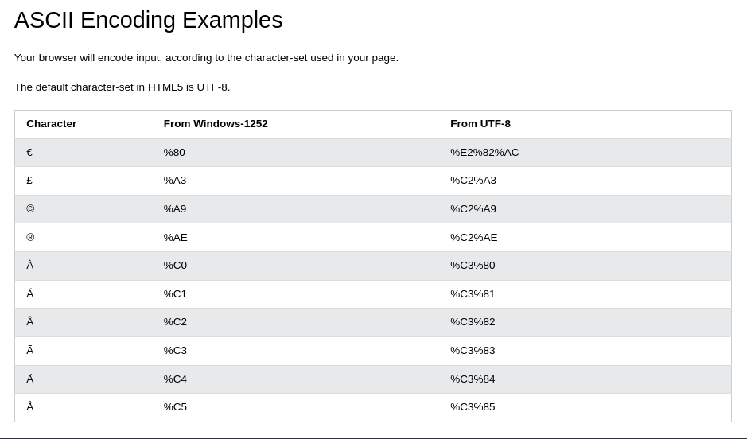

URL Encode
- URL adalah kata lain dari web address
- URL bisa terdiri dari susunan kata, atau juga bisa berupa IP adress
- Biasanya orang akan menggunakan URL yang terdiri dari susunan kata, karena lebih mudah mengigat kata dari pada angka
Source
URL - Uniform Resource Locator
Web browsers meminta halaman web ke server menggunakan URL. URL digunakan to address sebuah dokumen atau data lainnya di web
scheme://prefix.domain:port/path/filename
- scheme : Menentukan tipe dari internet services (kebanyakan http atau https)
- prefix : Menentukan sebuah domain prefix (default buat http adalah www)
- domain : Menentukan internet domain name (w3schools.com)
- port : Menentukan host port number (defaulnya http 80)
- path : Menentukan path di server (kalau gak ada, akan menuju ke root dari web)
- filename : Menentukan nama resource
Common URL Schemes
- http : web page pada umumnya. Not encrypted
- https : Secure web pages. Encrypted
- ftp : Downloading atau uploading files
- file : file di local
URL Ecnoding
- URLs can only be sent over the Internet using the ASCII character-set. If a URL contains characters outside the ASCII set, the URL has to be converted.
- URL encoding converts non-ASCII characters into a format that can be transmitted over the Internet.
- URL encoding replaces non-ASCII characters with a "%" followed by hexadecimal digits.
- URLs cannot contain spaces. URL encoding normally replaces a space with a plus (+) sign, or %20.

URL Encoding Reference reference